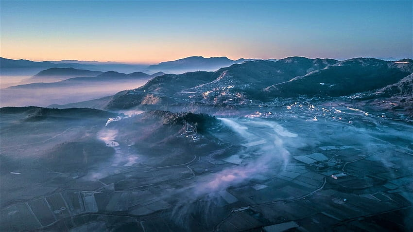
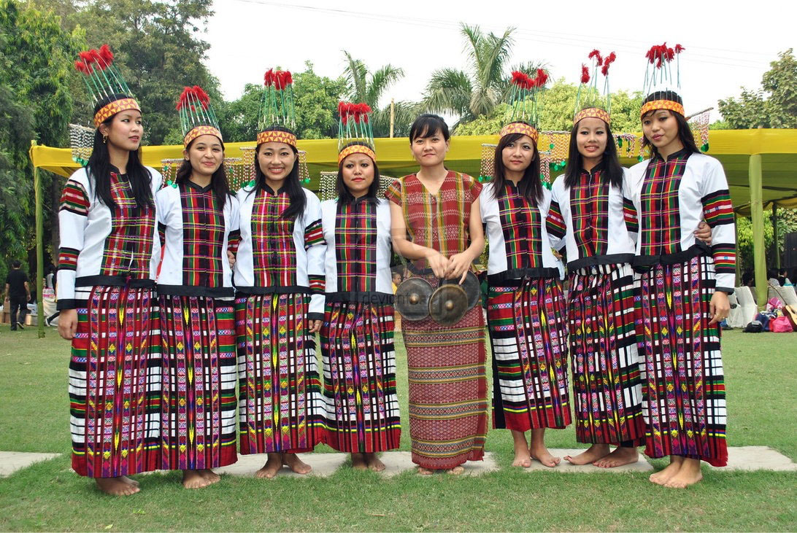
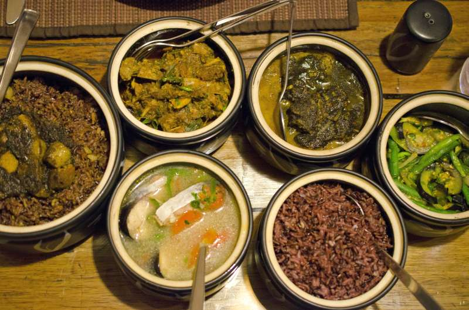
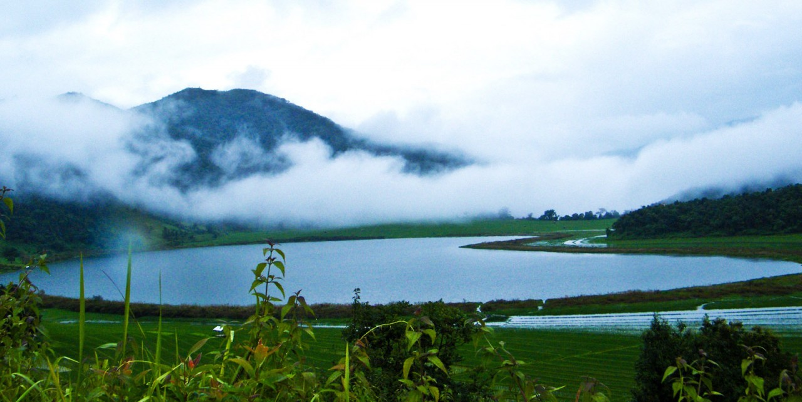

╰┈➤Mizoram Information
| ✧ Aspect | Information |
|---|---|
| ✧ Capital | Aizawl |
| ✧ Chief minister | Zoramthanga |
| ✧ Largest City | Aizawl |
| ✧ Districts | 11 |
| ✧ Official Language | Mizo |
| ✧ Other Language | Aso, Chho, Halam, Hinar, Lai, Lusei, Mara, Miu - Khumi |
| ✧ Population | Approximately 1.1 million |
| ✧ Area | 21,087 square kilometers |
| ✧ Major Rivers | Chhimtuipui, Tlawng, Tuivawl |
| ✧ Major Industries | Horticulture, Handloom, Handicrafts, Sericulture |
| ✧ Popular Places | Murlen National Park, Dampa Tiger Reserve, Vantawng Falls, Phawngpui Peak |
╰┈➤Traditional Dresses of Mizoram
The traditional Dresses of Mizoram for men is called "Puanchei" and for women is called "Puan". Both attire are woven with intricate designs and patterns, showcasing the rich cultural heritage of the state.
╰┈➤History of Mizoram
Mizoram, a northeastern state of India, has a rich and complex history that spans centuries. Historically, the Mizo people were largely agrarian, living in small, self-sufficient villages scattered across the hills and valleys of the region. However, Mizoram's history took a significant turn with the arrival of British colonial rule in the 19th century.
During British rule, Mizoram was initially part of the Lushai Hills district within Assam. The British administration introduced new systems of governance and infrastructure, including the spread of education and Christianity, which had a profound impact on Mizo society and culture.
After India gained independence in 1947, the Mizo Hills became a district of Assam. However, dissatisfaction among the Mizo people with their political and economic marginalization led to the emergence of insurgent movements seeking greater autonomy. This culminated in the Mizo National Front (MNF) uprising in the 1960s, demanding independence from India.
The conflict between the Indian government and the MNF led to years of violence and instability in the region. However, in 1986, following years of negotiations, the Government of India and the MNF signed the Mizoram Accord, which granted statehood to Mizoram and ended the insurgency. This marked a turning point in Mizoram's history, ushering in an era of peace and stability.
Since achieving statehood, Mizoram has made significant strides in development, particularly in areas such as education, healthcare, and infrastructure. The state has also preserved and promoted its unique cultural heritage, including traditional music, dance, and festivals.
Today, Mizoram is known for its lush green landscapes, vibrant cultural traditions, and strong sense of community. While challenges such as economic development and infrastructure remain, Mizoram's journey from a region of conflict to one of relative peace and progress is a testament to the resilience and determination of its people.
Thank you
╰┈➤Mizoram Pictures




